| Cadru | Pixeli diferiți | CPU render înainte (ms) | CPU render după (ms) |
|---|---|---|---|
| character-close | 72.606% | 13.31 | 14.60 |
| taxi-front-three-quarter | 27.253% | 7.56 | 8.25 |
| street-eye-level | 4.031% | 7.76 | 10.42 |
| decor-tree-bench | 2.933% | 8.44 | 8.16 |
| civil-cars | 13.912% | 9.62 | 11.36 |
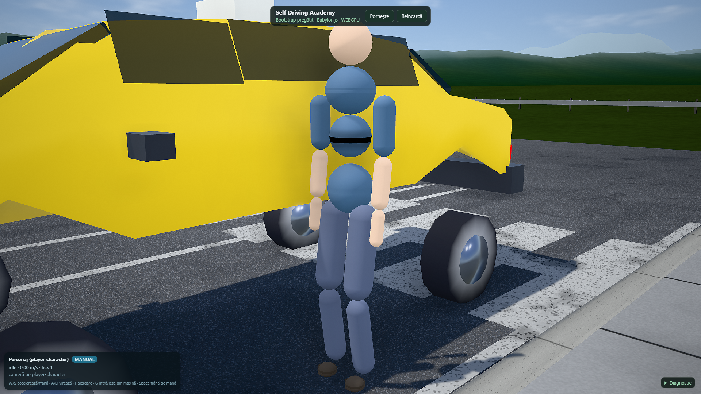
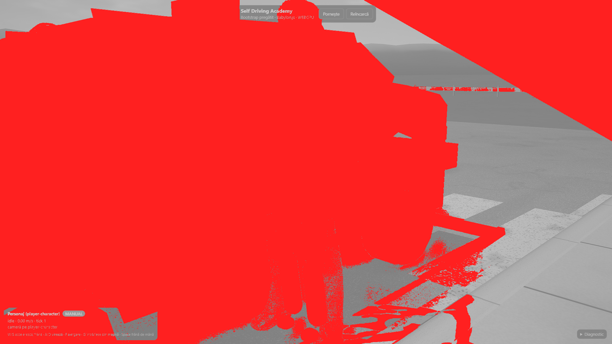
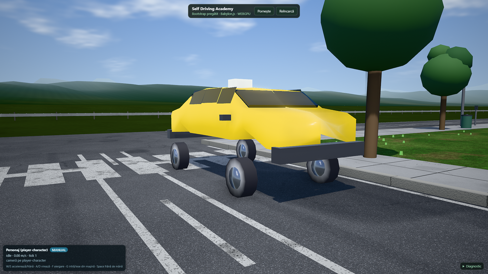
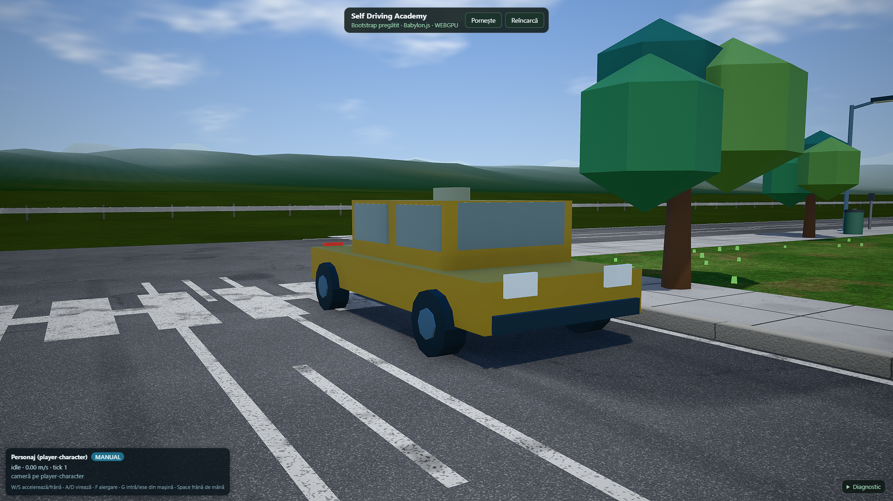
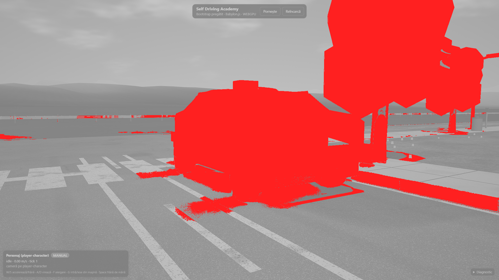
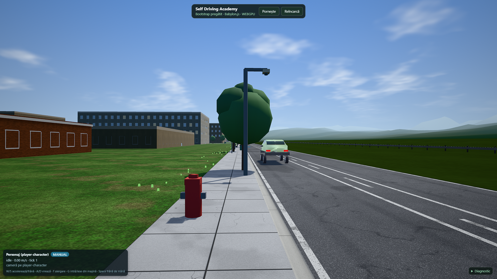
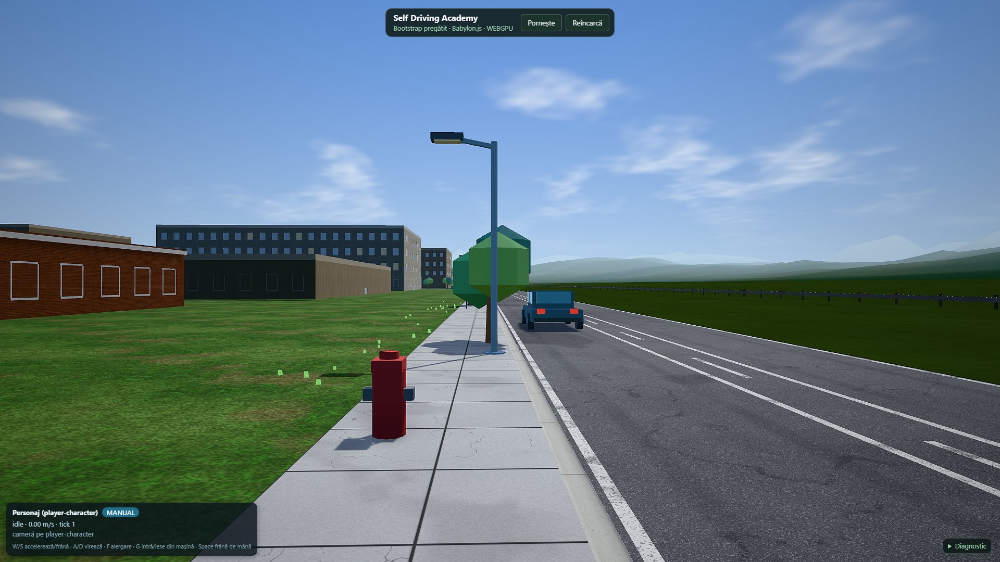
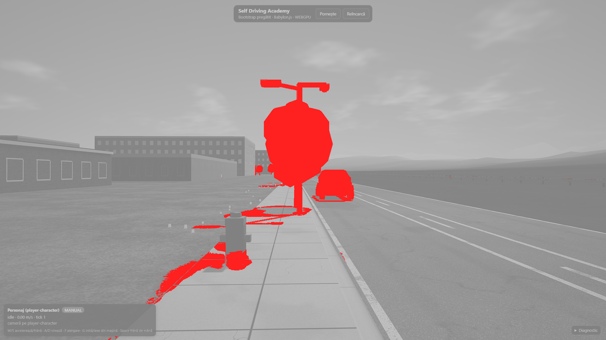
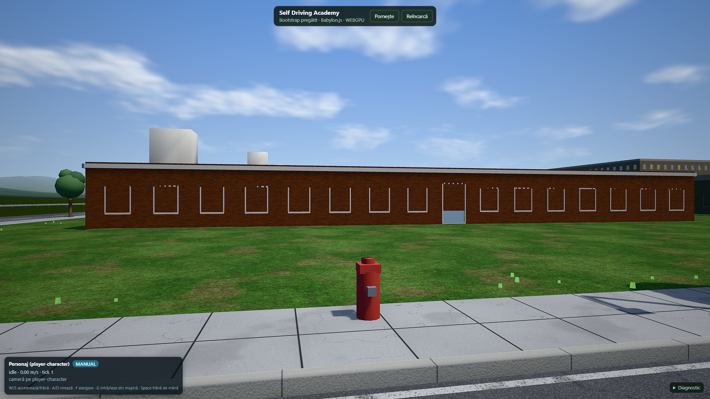
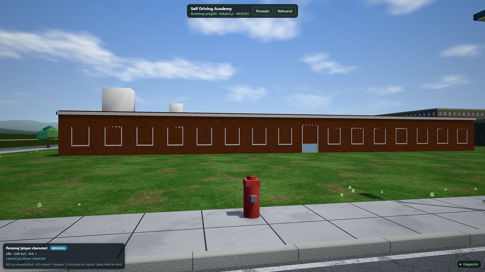
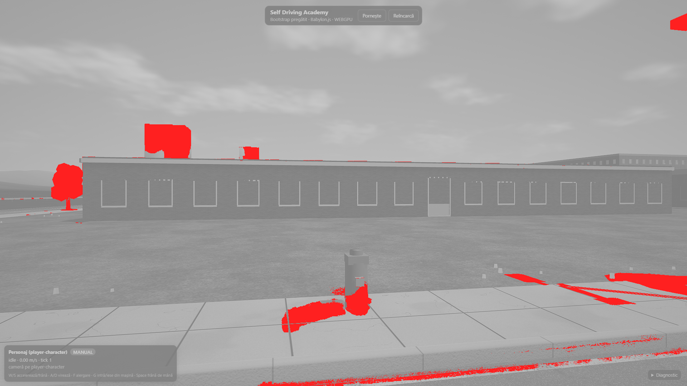
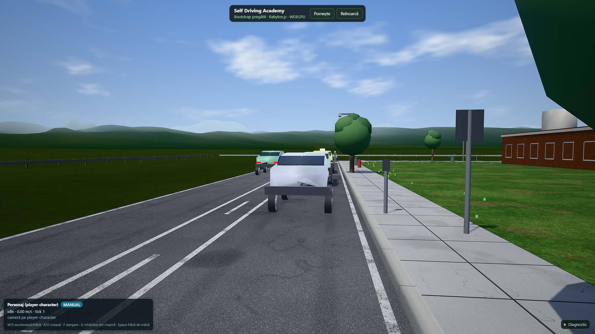
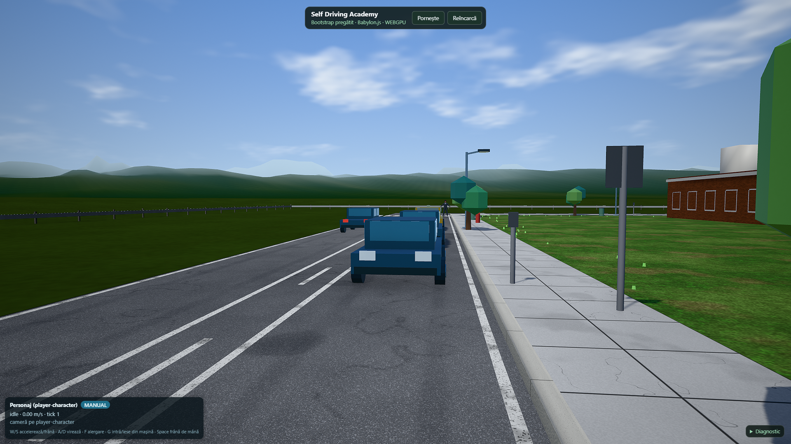
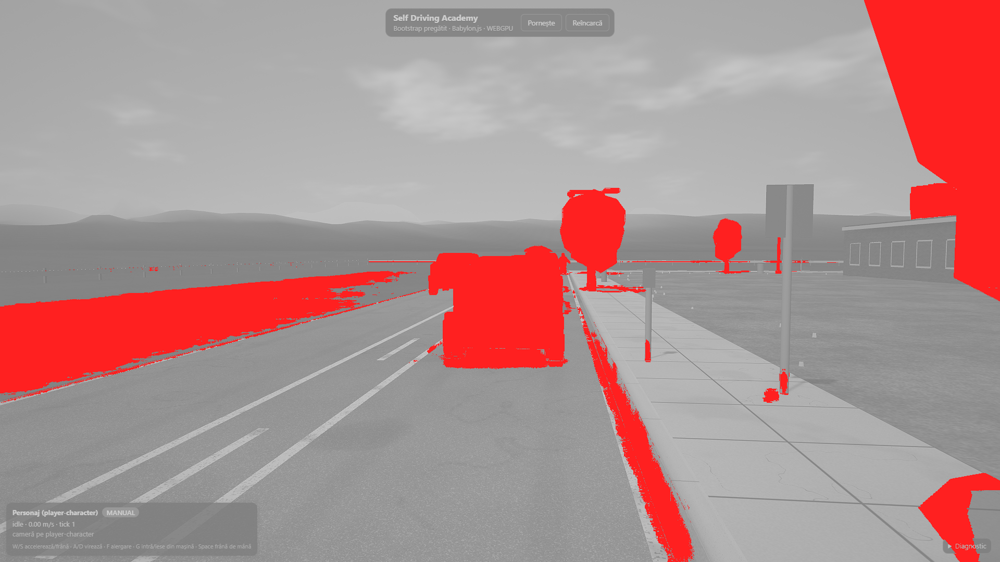